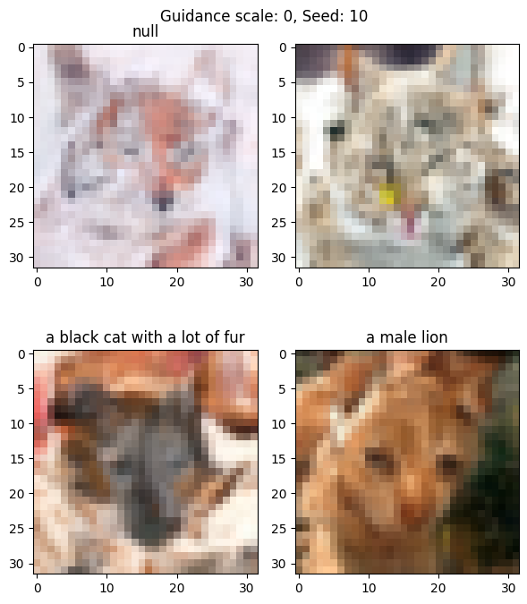
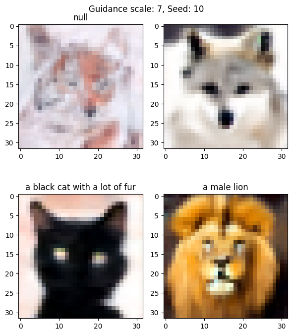
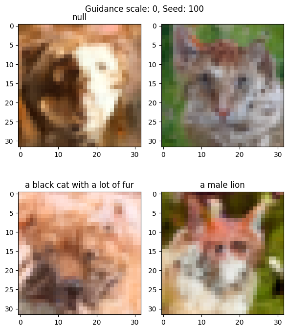
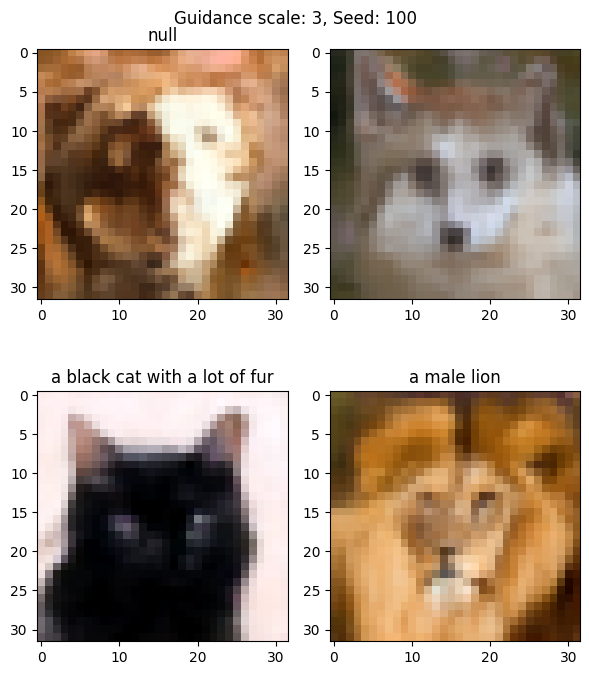
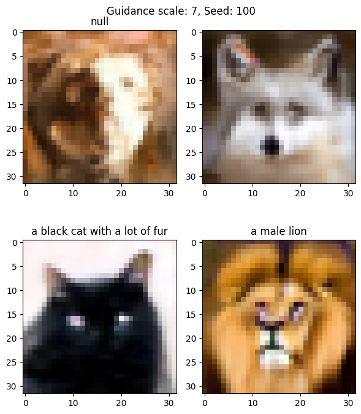
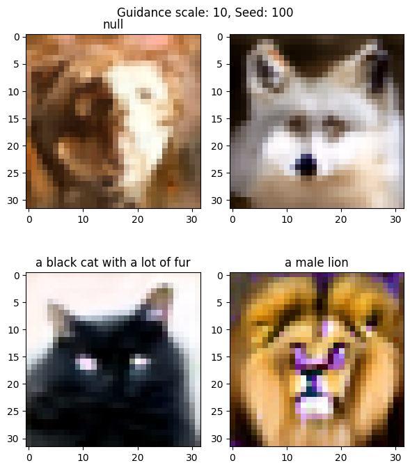
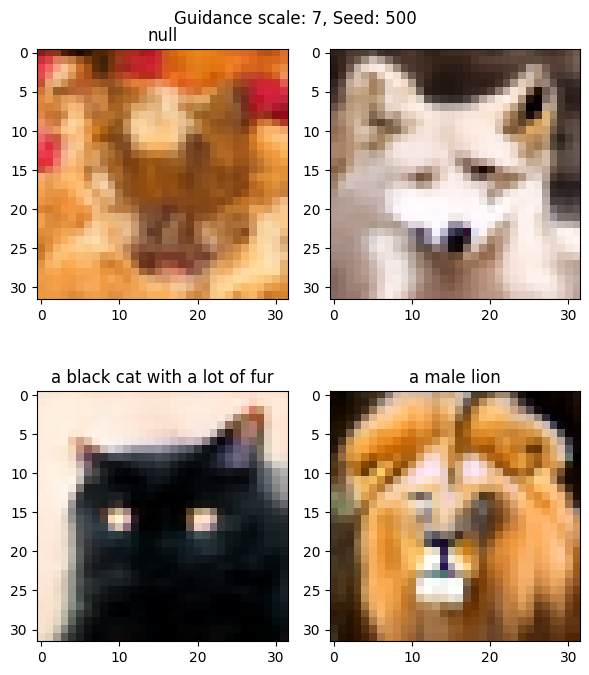

import torch
from tqdm.auto import tqdm
def denoising_step(denoising_model, x_t, t, noise_schedule, text_embeddings=None, thresholding=False, clip_sample=True, clip_sample_range=1.0, guidance_scale=7.5):
"""
This is the backward diffusion step, with the effect of denoising.
Implements classifier-free guidance by conditioning on both text embeddings and unconditional (null) embeddings.
"""
if isinstance(t, int):
t_tensor = torch.full((x_t.shape[0],), t, device=x_t.device)
else:
t_tensor = t
# Double the batch - first half conditioned on text, second half unconditioned
x_twice = torch.cat([x_t] * 2)
t_twice = torch.cat([t_tensor] * 2)
# Create unconditional embeddings (zeros) and concatenate with text embeddings
if text_embeddings is not None:
uncond_embeddings = denoising_model.get_null_text_embed(batch_size=x_t.shape[0])
embeddings_cat = torch.cat([uncond_embeddings, text_embeddings])
else:
embeddings_cat = None
with torch.no_grad():
model_output = denoising_model(t=t_twice, x=x_twice, text_embeddings=embeddings_cat)
if hasattr(model_output, "sample"):
model_output = model_output.sample
# Split predictions and perform guidance
noise_pred_uncond, noise_pred_text = model_output.chunk(2)
adjustment = guidance_scale * (noise_pred_text - noise_pred_uncond)
# print("avg adjustment", adjustment.cpu().numpy().mean(), "guidance scale", guidance_scale)
model_output = noise_pred_uncond + adjustment
# Extract relevant values from noise_schedule
alpha_prod_t = noise_schedule["alphas_cumprod"][t_tensor]
# deal with t=0 case where t can be a tensor
alpha_prod_t_prev = torch.where(t_tensor > 0,
noise_schedule["alphas_cumprod"][t_tensor - 1],
torch.ones_like(t_tensor, device=x_t.device))
# Reshape alpha_prod_t_prev for proper broadcasting
alpha_prod_t = alpha_prod_t.view(-1, 1, 1, 1)
alpha_prod_t_prev = alpha_prod_t_prev.view(-1, 1, 1, 1)
beta_prod_t = 1 - alpha_prod_t
beta_prod_t_prev = 1 - alpha_prod_t_prev
current_alpha_t = alpha_prod_t / alpha_prod_t_prev
current_beta_t = 1 - current_alpha_t
# Compute the previous sample mean
pred_original_sample = (x_t - beta_prod_t ** 0.5 * model_output) / alpha_prod_t ** 0.5
if clip_sample:
pred_original_sample = torch.clamp(pred_original_sample, -clip_sample_range, clip_sample_range)
# Compute the coefficients for pred_original_sample and current sample
pred_original_sample_coeff = (alpha_prod_t_prev ** 0.5 * current_beta_t) / beta_prod_t
current_sample_coeff = current_alpha_t ** 0.5 * beta_prod_t_prev / beta_prod_t
# Compute the previous sample
pred_prev_sample = pred_original_sample_coeff * pred_original_sample + current_sample_coeff * x_t
# Add noise
variance = torch.zeros_like(x_t)
variance_noise = torch.randn_like(x_t)
# Handle t=0 case where t can be a tensor
non_zero_mask = (t_tensor != 0).float().view(-1, 1, 1, 1)
variance = non_zero_mask * ((1 - alpha_prod_t_prev) / (1 - alpha_prod_t) * current_beta_t)
variance = torch.clamp(variance, min=1e-20)
pred_prev_sample = pred_prev_sample + (variance ** 0.5) * variance_noise
return pred_prev_sample
def generate_samples_by_denoising(denoising_model, x_T, text_embeddings, guidance_scale, noise_schedule, n_T, device, thresholding=False, clip_sample=True, clip_sample_range=1.0, seed=0):
"""
This is the generation process.
"""
torch.manual_seed(seed)
x_t = x_T.to(device)
pbar = tqdm(range(n_T - 1, -1, -1))
for t in pbar:
x_t = denoising_step(
denoising_model=denoising_model,
x_t=x_t,
t=t,
noise_schedule=noise_schedule,
text_embeddings=text_embeddings,
guidance_scale=guidance_scale,
thresholding=thresholding,
clip_sample=clip_sample,
clip_sample_range=clip_sample_range,
)
pbar.set_postfix({"std": x_t.std().item()})
# print("raw x_t range", x_t.min(), x_t.max())
x_t = (x_t / 2 + 0.5).clamp(0, 1)
# print("after clamp", x_t.min(), x_t.max())
return x_tGenerate images with text conditioning
Now we will load the model checkpoint, update the sampling logic to handle text embeddings, and experiment with different text prompts, guidance scales, and random seeds.
Updating the sampling logic to handle classifier-free guidance
We will run the denoising model in both conditional and unconditional modes: one with the text embeddings and one with the null embeddings. This can be done in a single forward pass by concatenating the text embeddings with the null embeddings. Then we can split the output into two parts, and compute the guidance by subtracting the two parts.
The following code is the main change:
# Double the batch - first half conditioned on text, second half unconditioned
x_twice = torch.cat([x_t] * 2)
t_twice = torch.cat([t_tensor] * 2)
# Create unconditional embeddings (null text embeddings) and concatenate with text embeddings
if text_embeddings is not None:
uncond_embeddings = denoising_model.get_null_text_embed(batch_size=x_t.shape[0])
embeddings_cat = torch.cat([uncond_embeddings, text_embeddings])
else:
embeddings_cat = None
with torch.no_grad():
model_output = denoising_model(t=t_twice, x=x_twice, text_embeddings=embeddings_cat)
# Split predictions and perform guidance
noise_pred_uncond, noise_pred_text = model_output.chunk(2)
adjustment = guidance_scale * (noise_pred_text - noise_pred_uncond)
model_output = noise_pred_uncond + adjustmentimport torch
import torch.nn as nn
from transformers import CLIPTextModel, CLIPTokenizer
class TextEncoder(nn.Module):
def __init__(self, model_name: str, device: str):
super().__init__()
self.model_name = model_name
self.model = CLIPTextModel.from_pretrained(model_name).to(device)
self.tokenizer = CLIPTokenizer.from_pretrained(model_name)
self.device = device
# Get the text embedding dimension from the config
self.text_embed_dim = self.model.config.hidden_size
def forward(self, text: str) -> torch.Tensor:
tokens = self.tokenizer(text, padding=True, truncation=True, return_tensors="pt").to(self.device)
return self.model(**tokens).pooler_output2024-12-31 20:33:28.554334: I tensorflow/core/util/port.cc:153] oneDNN custom operations are on. You may see slightly different numerical results due to floating-point round-off errors from different computation orders. To turn them off, set the environment variable `TF_ENABLE_ONEDNN_OPTS=0`.
2024-12-31 20:33:28.567927: E external/local_xla/xla/stream_executor/cuda/cuda_fft.cc:485] Unable to register cuFFT factory: Attempting to register factory for plugin cuFFT when one has already been registered
2024-12-31 20:33:28.583236: E external/local_xla/xla/stream_executor/cuda/cuda_dnn.cc:8454] Unable to register cuDNN factory: Attempting to register factory for plugin cuDNN when one has already been registered
2024-12-31 20:33:28.587863: E external/local_xla/xla/stream_executor/cuda/cuda_blas.cc:1452] Unable to register cuBLAS factory: Attempting to register factory for plugin cuBLAS when one has already been registered
2024-12-31 20:33:28.599387: I tensorflow/core/platform/cpu_feature_guard.cc:210] This TensorFlow binary is optimized to use available CPU instructions in performance-critical operations.
To enable the following instructions: AVX2 AVX512F AVX512_VNNI FMA, in other operations, rebuild TensorFlow with the appropriate compiler flags.
2024-12-31 20:33:29.299380: W tensorflow/compiler/tf2tensorrt/utils/py_utils.cc:38] TF-TRT Warning: Could not find TensorRTLoad the checkpoint
from lib_4_1.diffusion import create_noise_schedule
from lib_4_1.model import create_unet_model
from lib_4_1.config import TrainingConfig
# generate images with text conditioning
# load the model
config = TrainingConfig(dataset="reese-green/afhq64_captions_64k", caption_column="caption_blip2-opt-2.7b", batch_size=8, resolution=32)
denoising_model = create_unet_model(config, config.device)
denoising_model.load_state_dict(torch.load("denoising_model_4_1.pth", map_location="cuda:0"))
denoising_model.eval()
text_encoder = TextEncoder("openai/clip-vit-large-patch14", "cuda:0")
text_encoder.eval()
noise_schedule = create_noise_schedule(n_T=1000, device="cuda:0")model params: 14.68 M/tmp/ipykernel_910080/1043077838.py:8: FutureWarning: You are using `torch.load` with `weights_only=False` (the current default value), which uses the default pickle module implicitly. It is possible to construct malicious pickle data which will execute arbitrary code during unpickling (See https://github.com/pytorch/pytorch/blob/main/SECURITY.md#untrusted-models for more details). In a future release, the default value for `weights_only` will be flipped to `True`. This limits the functions that could be executed during unpickling. Arbitrary objects will no longer be allowed to be loaded via this mode unless they are explicitly allowlisted by the user via `torch.serialization.add_safe_globals`. We recommend you start setting `weights_only=True` for any use case where you don't have full control of the loaded file. Please open an issue on GitHub for any issues related to this experimental feature.
denoising_model.load_state_dict(torch.load("denoising_model_4_1.pth", map_location="cuda:0"))Text prompts
We will use 2 empty text prompts, and another 2 text prompts describing animals. These texts are encoded into text embeddings.
We then force the first text embedding to be the learned null embedding. The second text prompt is an empty string, but its embedding is different from the null embedding. When the guidance scale varies from 0 to a larger value, do the generated images change? How do they change?
texts = ["null", "", "a black cat with a lot of fur", "a male lion"]
with torch.no_grad():
text_embeddings = text_encoder(texts)
print(text_embeddings.shape)
# TODO: for empty text, set the text_embeddings to null_embedding
try:
text_embeddings[0] = denoising_model.get_null_text_embed()
except Exception as e:
print("Error: get_null_text_embed is not defined in the denoising_model")
print(e)torch.Size([4, 768])Utility function to generate and show images
import numpy as np
import matplotlib.pyplot as plt
def generate_and_show(**kwargs):
torch.manual_seed(0)
a = generate_samples_by_denoising(
denoising_model=denoising_model,
x_T=torch.randn(len(texts), 3, 32, 32),
text_embeddings=text_embeddings,
# guidance_scale=0,
noise_schedule=noise_schedule,
n_T=1000,
device="cuda:0",
# seed=10,
**kwargs,
)
# display images
# convert from cuda to cpu
a = a.cpu()
# convert from torch to numpy
a = a.numpy()
# convert from (C, H, W) to (H, W, C)
a = np.transpose(a, (0, 2, 3, 1))
# make the figure a bit taller
fig, axes = plt.subplots(2, 2, figsize=(6, 7))
axes = axes.ravel()
for i in range(4):
axes[i].imshow(a[i])
axes[i].set_title(texts[i])
plt.tight_layout()
# a caption for the whole figure
plt.suptitle(f"Guidance scale: {kwargs.get('guidance_scale', 0)}, Seed: {kwargs.get('seed', 0)}")
plt.show()Generate images with no text conditioning
With a guidance scale of 0, we expect the text prompting to have no effect, because it will be equivalent to unconditional generation.
# generate samples
generate_and_show(
guidance_scale=0, seed=10,
)
Generate images with text conditioning (guidance_scale=7)
Now with a larger guidance scale of 7, we can see that both prompts “a black cat with a lot of fur†and “a male lion†produced satisfying images. Our small model (15M) worked!
Interestingly, the null text embedding looks exactly the same as when guidance scale is 0. This means our learned null text embedding is behaving correctly: zero effect on image generation.
The empty string Ҡ(the top right image) is a wolf. Is it arbitrary or is there something special about wolves?
# generate samples
generate_and_show(
guidance_scale=7, seed=10,
)
Now try a different random seed
With a different random seed 100, we will have a different starting noise image. We would expect all four images to be different from when the seed is 10. And this is indeed the case.
generate_and_show(
guidance_scale=0, seed=100,
)
With a guidance scale of 3, the text prompts are already quite effective for both the cat and the lion. Since the seed is different from before, their appearance also look different, which means the model learned about the diversity within each species.
The empty string is still a wolf.
generate_and_show(
guidance_scale=3, seed=100,
)
Larger guidance scale makes the cat’s face bigger, perhaps due to the model correlating “lot of fur†with bigger face. The lion looks more stern with some over-saturated color.
generate_and_show(
guidance_scale=7, seed=100,
)
With an even larger guidance scale of 10, we see more color saturation.
generate_and_show(
guidance_scale=10, seed=100,
)
Here is generating using yet another random seed. We can feel pretty sure about the model’s ability to follow instructions, and that the model takes empty text to mean wolf.
generate_and_show(
guidance_scale=7, seed=500,
)
Does the denoising model (the generator) have a bias that favors wolf? Is this an inherent property of the text encoder? For example, is the empty text closer to “wolf†than “cat†in the latent space?
import torch
concepts = ["", "a wolf", "a cat", "a lion", "a dog"]
with torch.no_grad():
concept_embeddings = text_encoder(concepts)
# pairwise cosine similarity
cosine_similarity = torch.nn.functional.cosine_similarity(concept_embeddings[0], concept_embeddings[:], dim=1)
print(cosine_similarity)
# pairwise euclidean distance
euclidean_distance = torch.nn.functional.pairwise_distance(concept_embeddings[0], concept_embeddings[:])
print(euclidean_distance)tensor([1.0000, 0.4773, 0.5562, 0.4810, 0.5907], device='cuda:0')
tensor([2.7713e-05, 2.9616e+01, 2.7415e+01, 2.9365e+01, 2.6354e+01],
device='cuda:0')Not really. So it remains a mystery.
Since we will make sure to replace an empty string with the null embedding, we don’t need to worry about this in practice.
Creating a captioned image dataset
In the next tutorial, we will walk through how to create a captioned image dataset using a pre-trained vision-language model (VLM).